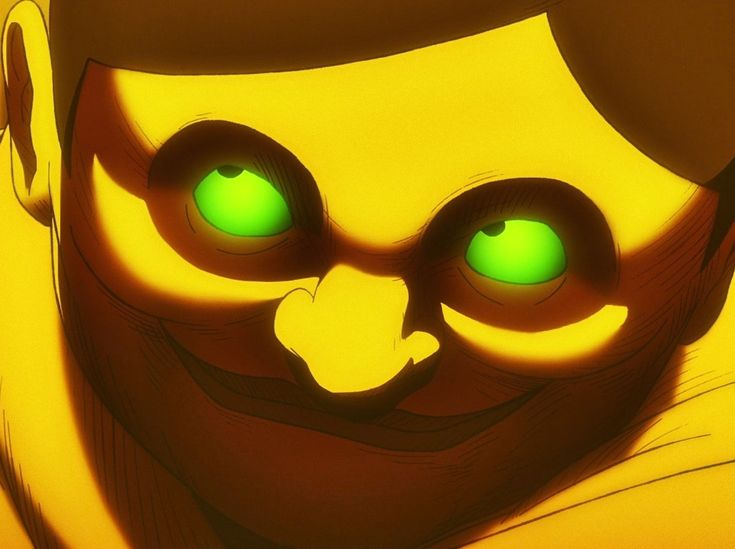
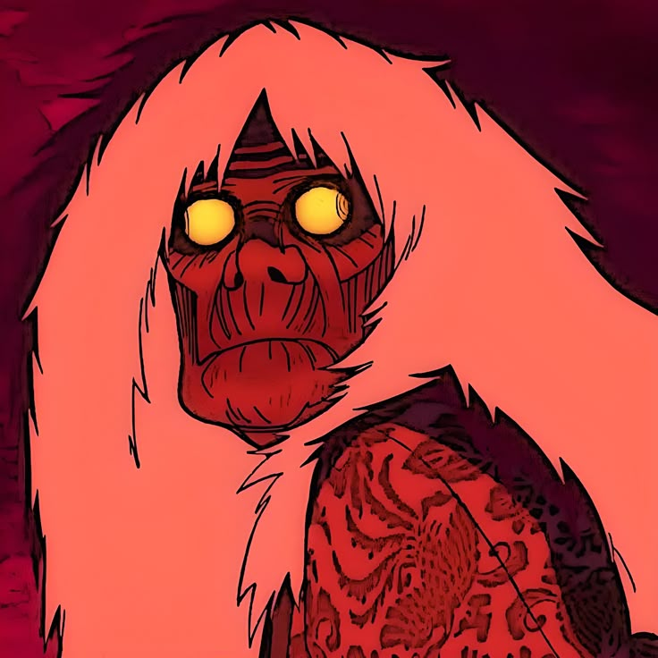

Quando o sobrenatural e o extraterrestre colidem, nasce uma história única!
EXPLORAR
SOBRE O ANIME
Dan Da Dan acompanha Momo Ayase, uma estudante que acredita em fantasmas, e Okarun, um colega obcecado por alienígenas. Para provar um ao outro o que é real, eles visitam locais paranormais e ETs, acabando abduzidos e possuídos. Juntos, enfrentam forças sobrenaturais caóticas enquanto desenvolvem poderes e buscam recuperar parte do corpo de Okarun
PERSONAGENS

MOMO AYASE
Uma garota determinada que acredita em fantasmas e espíritos

OKARUN
Um garoto que acredita em alienigenas e adora ocultismo

AIRA
Uma garota popular que ganha poderes espirituais e passa a enfrentar espíritos

JIJI
Amigo de infância de Momo envolvido com o sobrenatural

SEIKO AYASE
Avó de Momo e uma poderosa médium que lida com espíritos
UNIVERSO
ALIENS

Seres extraterrestres que chegam à Terra em busca de seus próprios objetivos. Alguns possuem tecnologias avançadas e habilidades que desafiam tudo o que Momo e Okarun conhecem.
SAIBA MAIS
ESPIRÍTOS

Ao contrário dos alienígenas (que buscam tecnologia e evolução biológica), a maioria dos espíritos surge a partir de traumas, mortes violentas, arrependimentos ou sentimentos intensos de pessoas que já morreram.